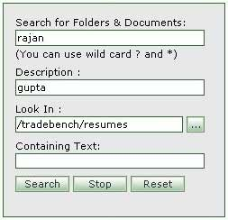

|
 |
- Search for Folders,Documents,Resumes,Timesheets : Enter the name of the item to be searched
- Description/Keyword: Enter the description/keyword of item to be searched.
- Containing Text: Enter the containing text of the document,resume or timesheet to be searched.
- Look In: Enter the path where the search has to be performed
 Select the path where search has to be performed using look-up next to the Look In text. Select the path where search has to be performed using look-up next to the Look In text.
- Search: Press 'Search' to perform the search based on the criteria entered.
- Stop: Press 'Stop' to stop the search.
- Reset: Press 'Reset' to reset entries to enable another search.
|